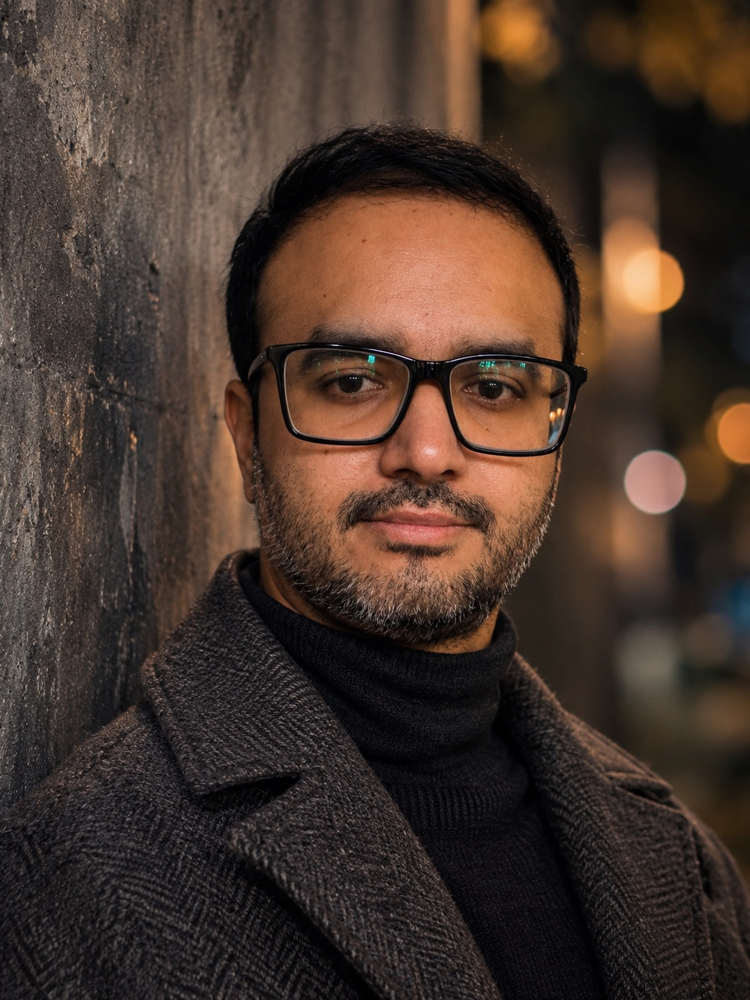
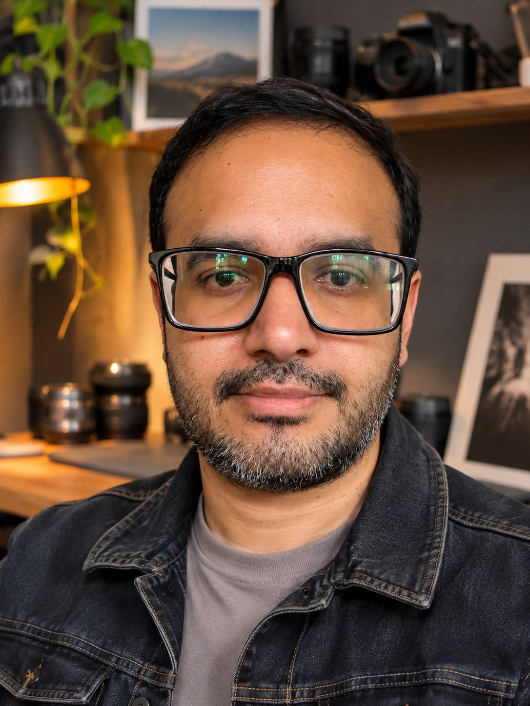
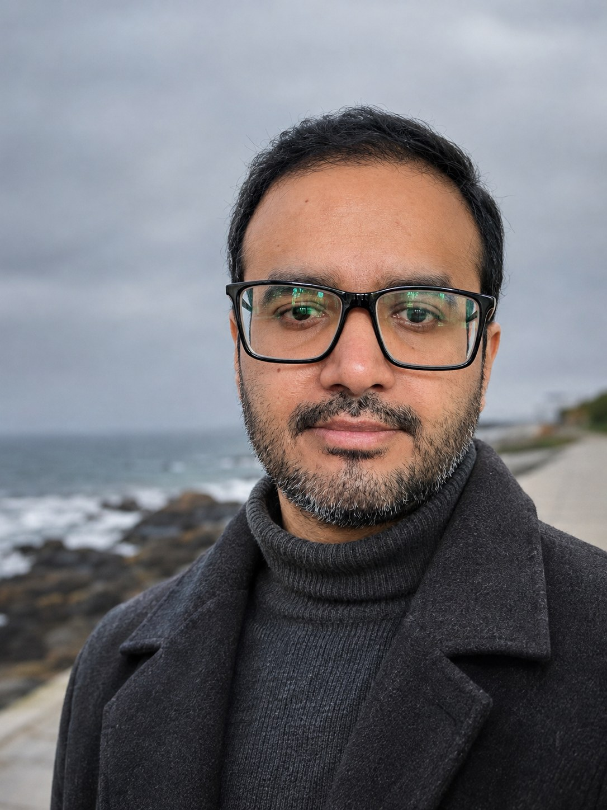
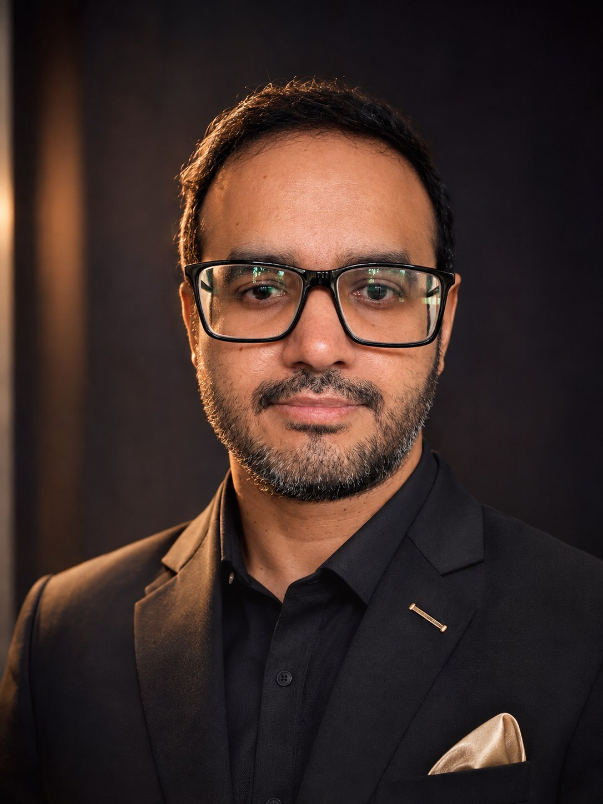
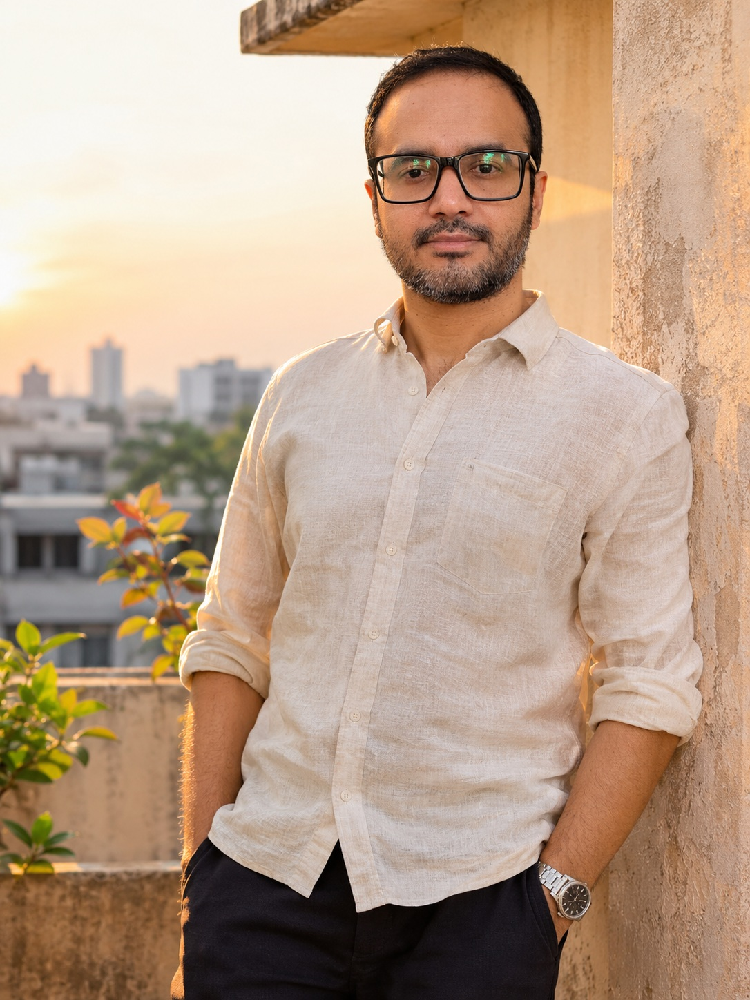

JABIR.
Chasing light, intentional frames, and timeless portraits. Crafting mood-driven frames & digital content.
Explore my workimages/hero.jpg

The Portfolio
A collection of intentional moments, quiet details, and stories told through the lens.




Every frame
has a feeling.
About Me
I'm JABIR, a digital creator with a passion for visual storytelling, thoughtful composition, and the beauty of natural light.
My creative approach is simple: chase the light, frame with intention, and create imagery that feels timeless. I enjoy crafting mood-driven photographs and digital content that tell stories without needing words.
Career &
Creative Focus
Photography and digital content creation are at the heart of my creative practice. I focus on building a distinctive visual language through light, mood, and authentic moments.
Professional experience, collaborations, and milestones can be added here as your portfolio grows.
Photography
Intentional framing, natural light, portraits, and visual storytelling.
Digital Content
Mood-driven visual concepts and thoughtfully crafted creative content.
Creative Direction
Composition, atmosphere, and a consistent visual point of view.
Let's create
something timeless.
For collaborations, creative projects, or a conversation about visual storytelling, reach out.
jabisaifu@gmail.com